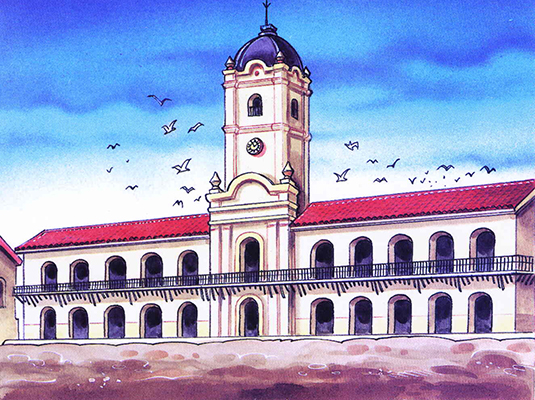

Juventud Americano Tesoro. Revolución de Mayo.
Chispas

La Revolución de Mayo la encabezaron pibes y viejos que pelearon por un país más justo...
Es una tarde desas en las que poco importa el clima. Para esta anécdota lo mismo da: la lluvia diluye cualquier contorno, la calor derrite todas las formas, pero al fin y al cabo ambas confunden los cuerpos en un todo.
Los jóvenes y viejos que forman la Legión Infernal caminan por la Plaza. La recorren, inquietos. Hace un rato estuvieron frenando a los personajes que intentaban entrar al Cabildo. Los apretaban con palos y fusiles, exigiendo que votasen a una Junta que gobernase en nombre del pueblo. Por ahí lo vemos a French, con su tranco rápido de cartero, que arenga la multitud repartiendo escarapelas rojiblancas. A su lado va Beruti, tirando garrotazos a los narizparada que se animan a acercarse.
-¡Qué viva el Rey y que muera el mal gobierno!- grita un pibe trepado a un farol.
Es que estos limados no están planteando que se termine la monarquía, ni pretenden instaurar una república: lo que quieren es el fin del absolutismo y la opresión, lo que quieren es vivir como quieren. Las señoras bien de la Ciudad de la Santísima Trinidad y del puerto de Santa María de los Buenos Ayres, encerradas en sus casas, no lo pueden creer. Se indignan entre tazas de té metido de contrabando.
Y lo mismo se indignan sus esposos, mercaderes del puerto o funcionarios del régimen corrupto, dentro del Cabildo, mientras tienen que bancarse que Belgrano, Moreno y Castelli les expliquen cómo viene la mano: a partir de ahora hay reforma agraria y creación de industrias, se acabó el monopolio y guay con guardar oro en los arcones. Endemientras desde su asiento Saavedra mira todo con serenidad: el Regimiento de Patricios está esperando en los cuarteles, dispuesto a defender las ideas revolucionarias.
-¡Viva América! ¡Viva la patria!- grita el pibe, que ya se bajó del farol y da saltos como los negros candombleros cuando ve que los partidarios del Virrey Cisneros huyen del recinto.
Enseguida se anuncia que hay una Junta de Gobierno, presidida por Saavedra y con la dirección política de Belgrano y Moreno.
-¡Viva!- corean los pibes de la Legión Infernal, esos a lo que llaman “los chisperos”, capaz porque encienden cualquier discusión política, o a lo mejor porque arden en deseos, o seguramente porque su voluntad explota como las semillas, como el amor...
Mucho mucho después, sobre este episodio, la Historia va a intentar decir lo que se le ocurra a su testaferro. De todas formas, ¡qué nosimporta!: el pueblo siempre sabe de qué se trata.